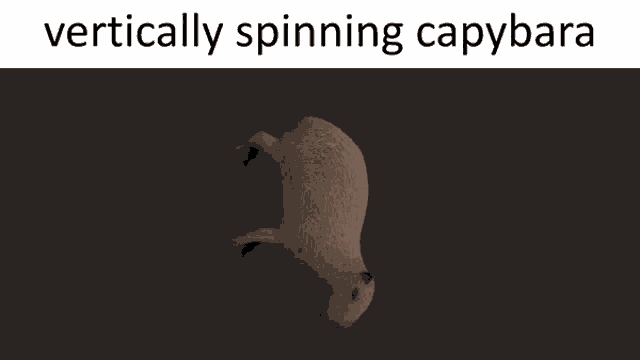
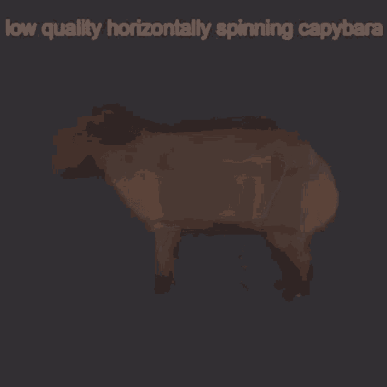

- A capybarák fantasztikus úszók
- A víz alatt képesek maradni 5 percig, anélkül hogy feljönnének levegőért
- A szárazföldön is remekül megállják a helyüket - akár 35 km/h-val is képesek futni
- Állandóan nő a foguk
- Más állatok megszoktak pihenni rajtuk
- Szeretnek más állatokon utazni
- Nagyon sok ragadozóval remek kapcsolatot ápolnak, többek között például a krokodilokkal is
- Nagyon szociális és barátságos állatok
- Egy kifejlett példány 35 kg és 70 kg között lehet
GIF-ek a Capybarákról


